If you already scanned further on down the posting, the directions may seem long and complicated. Let me assure you that they are not. As a recipe developer, it is my job to ensure that you have all the tools, knowledge, and techniques needed to create a successful recipe. The last thing I ever want to do is waste your time and money. So please be sure to take the time to read through this complete post before starting the recipe. That goes for any recipe on my site.
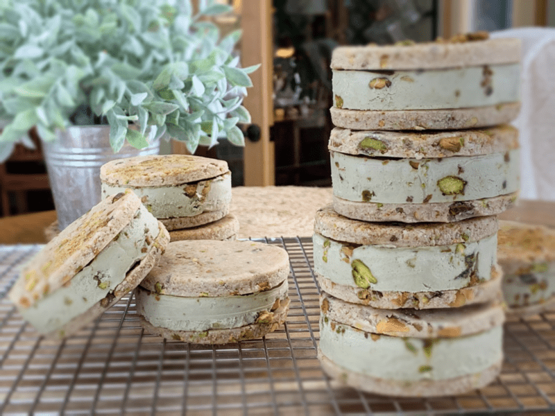
I created this recipe for a dear woman named Maureen. She is one of our Nouvearaw and private Facebook members. She requested that I design a Pistachio Ice Cream Sandwich recipe… so here it is! My adventure started with the cookie. Many wonderful flavors and texture combinations were rolling around in my head. A chocolate cookie is standard of ice cream sandwiches, but I didn’t want to create a typical recipe. So, I created a sweet and salty sugar cookie to snuggle up against the pale green ice cream center.
The cookies are slightly chewy with little pockets of crunch. The ice cream is rich and creamy, feels like velvet on the tongue. I also added chopped pistachios to the ice cream just before it was done churning in the ice cream machine. My goal was to create an “experience” with each bite. Chewy, crunchy, creamy, sweet, and salty. What do you think of that combination? Ready to give it a try?
Using Ice Cream Machines
Once we’ve made the mixture, it must cool down before it goes in the ice cream machine. It is best to put it in the fridge overnight to get it as cold as possible. If you are in a time crunch, you can pop the mixture in the freezer for an hour or so. After removing from the freezer, be sure to blend it long enough to break up any ice crystals that might have formed before pouring it into the ice cream maker.
Also, make sure that the bowl that comes with the ice cream machine is frozen solid. These bowls have a liquid gel within the walls of it that freezes solid. One way to tell if it’s ready to use is to shake the bowl. If you can still hear the gel sloshing around, it’s not ready yet. Do not proceed until it is completely frozen solid.
By chilling the ice cream slurry and having the bowl frozen solid, it gives your machine a head start as it will freeze the mixture faster so it will spend much less time churning and the ice crystals will be smaller.
Can I Make this Recipe Without a Machine?
Yes, you can, but I recommend using one if at all possible. By going through the process of using an ice cream machine, it will create a better texture due to the air that it helps to whip into it. If you don’t own an ice cream machine, you can pour the ice cream batter into a lined baking pan. I will be sure to include this process in the directions below.
Why is Homemade Ice Cream Harder than Store Bought?
There are several reasons for this. Homemade ice cream usually contains much less air than the stuff you buy in the store. Air keeps ice cream soft. So the less there is, the harder your ice cream. Also, ice creams that are lower in fat or sugar will create harder ice cream. Fat doesn’t freeze. And sugar lowers the freezing temperature of the water in our mixes. So they both keep our ice cream soft. So if you decide to reduce the fat or sugar from another person’s recipe, be prepared for different results and don’t blame the recipe creator.
Ingredient Details
Pistachios – raw or roasted
- I want to quickly touch base on a few of the ingredients that I used. First off, I didn’t have access to raw unsalted pistachios. I could have ordered them, but right now with all the snow storms, it’s been a challenge getting our mail. So, I used salted roasted pistachios. These are not raw, but Bob and I are ok with that. If this is an issue for you, please use raw ones. The flavor will be a tad different, but that’s ok.
Raw Honey
- I used unfiltered raw honey, which has a super thick texture. I highly recommend this kind, not only for this recipe but for all my other recipes that call for honey. If you are Bee-Gan (a vegan that doesn’t eat honey), you could use maple syrup or coconut nectar.
Almond Flour (for the cookies)
- I used FINE almond flour to create the perfect texture of the cookie. You can use store bought (not raw), or you can make your own by dehydrating almond pulp (the byproduct after making your almond milk) and then grinding it down to a fine flour. There is a link below on how to do that if interested.
Matcha Powder
- I added matcha powder to tint the ice cream a greenish color. Pistachios alone aren’t enough to do that, and most people associate pistachios with the color green. But that’s not the only reason. Matcha powder adds some incredible health benefits to the ice cream. “Matcha puts you in a calm yet an alert state, sharpening memory and concentration, reducing the effects of stress on your mind and body, all thanks to the high concentrations of the amino acid, L-theanine.” Now, who doesn’t want to eat ice cream that helps with that?!
Well, I think I bent your ear long enough. I hope you give this recipe a try and thoroughly enjoy it! Please leave me a comment below. Have a blessed time in the kitchen, amie sue
 Ingredients:
Ingredients:
Cookies
Yields: 10 (2 3/4″ cookie cutter) cookies
- 2 cups (200 g) fine almond flour
- 1/3 cup (30 g) coconut flakes, powdered
- 1/4 tsp (1 g) Himalayan pink salt
- 1/3 cup (100 g) maple syrup
- 1/2 tsp (2 g) almond extract
- 1 cup (130 g) chopped pistachios, roasted/salted
- 1/4 cup (40 g) coconut sugar
- 1/8 tsp ground nutmeg
- 1/8 tsp ground cinnamon
Ice Cream
- 1 cup fresh almond milk
- 2 cups cashews, soaked 2+ hours
- 1/4 cup (32.5 g) pistachios, roasted/salted
- 1/2 cup coconut oil, melted
- 1/4 cup raw honey
- 1 tsp almond extract
- 3 tsp matcha powder
- 1/2 cup chopped pistachios, roasted/salted
- 1/4 tsp sea salt (unless pistachios are salted, then omit)
Preparation:
Cookies
- Combine the chopped pistachios, sugar, nutmeg, and cinnamon in a bowl. Stir until combined and set aside.
- In the food processor, fitted with the “S” blade, combine the almond flour, powdered dried coconut flakes, and salt. Hit the pulse button a few times on the machine to mix the dry ingredients.
- Add the maple syrup and almond flavoring and process until the dough starts to form a ball as it spins.
- Remove the dough and place in a bowl so you can hand fold in 1/3 cup of the crushed, seasoned, pistachios mixture. I didn’t add this to the food processor step because I wanted to keep a uniform texture with the pistachios.
- Line the countertop with plastic wrap or place a nonstick dehydrator sheet in front of you.
- Set the dough ball in the center of the nonstick surface and slightly flatten with your hand. Sprinkle a small amount of the pistachio mixture on top, cover with another plastic sheet and roll the dough out to 1/8-1/4″ thickness.
- By adding the extra pistachio mixture on just before rolling, it presses the nuts into the surface but leaves them visual for aesthetic purposes.
- Using a circular cookie cutter, cut out as many as you can and place them on the mesh sheet that comes with the dehydrator tray.
- Gather the dough scraps, form them into a ball, place them on the center of the nonstick sheet, and repeat the process until all the dough is used up.
- Dehydrate at 145 degrees (F) for 1 hour, then reduce to 115 degrees (F) and continue to dry for roughly 10 hours or overnight.
- You will want to leave a little moisture in the cookie since we will be freezing it. That way it will keep that chewy texture.
- Make sure that the cookies have completely cooled from being in the dehydrator before you start building the ice cream sandwiches. If they are warm, the ice cream will begin to soften and slip around.
- Pour the ice cream batter into a freezer-safe container and let it freeze until solid.
- Scoop a 1/3 cup of ice cream onto one cookie and top with a second cookie and press gently to spread the ice cream evenly between the cookies. Make sure that the pretty side of each cookie is facing outward.
- Place the ice cream sandwiches on a large tray in the freezer until firm.
- Remove and wrap each one individually and return to the freezer for future enjoyment!
Sheet Pan Method
- Line two baking sheets or pans with parchment paper. We will use one for the ice cream and the second one will be using to place the assembled ice cream sandwiches on.
- In fact, on that second sheet pan, take 1/2 of the cookies you made and place them in single layer rows, bottom side facing up. Set aside.
- After the ice cream has completed its process in the ice cream machine, place the ice cream on the pan and spread it out evenly. The key is to make sure that it’s even so that the cookies set nice and flat on sandwiches.
- Slide the pan in the freezer and allow it to freeze for several hours or until solid. You can let it freeze overnight as well.
- The more frozen that it is, the more time you have during the assembly process before things start melting around the edges.
- Once the sheet of ice cream is solid, use the same cookie-cutter that you used for the cookies and cut out circles of ice cream.
- To ensure a clean-cut, rinse the cutter with cold water in between each cut.
- The ice cream scraps can be enjoyed as a reward for your labor of love!
- Place an ice cream disc on each of the cookies that are lined out on the baking pan.
- Then top each one with another cookie (remember to put the bottom side of the cookie facing down).
- Gently press the sandwich together but not too hard that the ice cream squishes out.
- Option – before sliding them into the freezer to set up, you can roll the edges of the sandwich in the remaining dry pistachio mixture.
- Once the ice cream sandwiches are frozen, wrap each one individually and place in a freezer-safe container. It is best to store ice cream in the back of the freezer to reduce ice crystals from forming.
- Enjoy within a month for freshness.
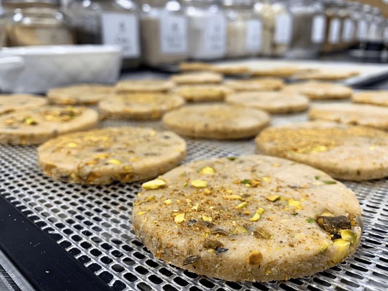
Have the cookies in the dehydrator while you make the ice cream.
-
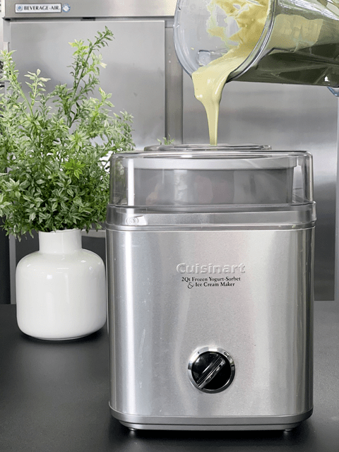
-
Pour the chilled batter into the machine.
-
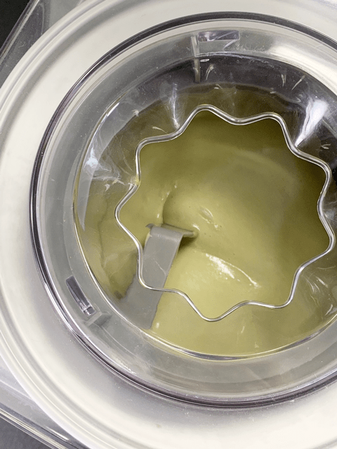
-
Here we are in the beginning stages.
-
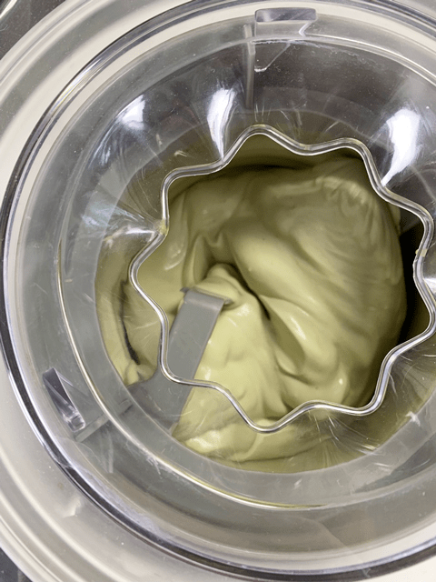
-
About 15 mins. into the process you can see it is thickening.
-
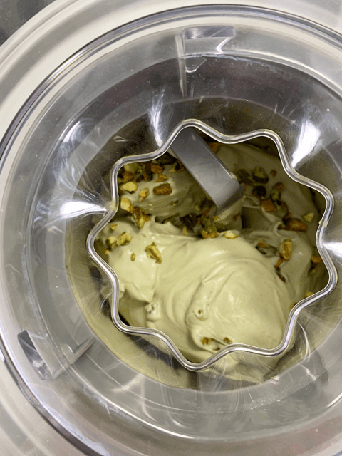
-
A few minutes before it’s done mixing, add in the nuts.
-
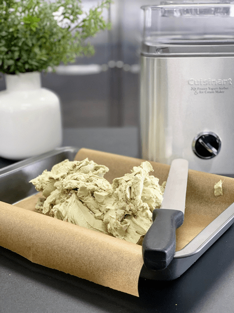
-
Transfer to a parchment-lined pan.
-
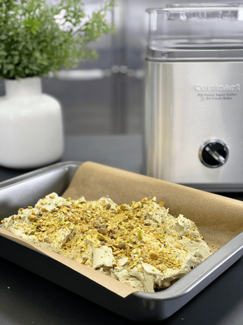
-
Add more chopped nuts.
-
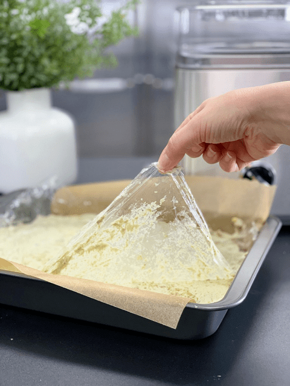
-
I laid a piece of plastic wrap on top and smoothed the ice cream flat, then removed the plastic.
-
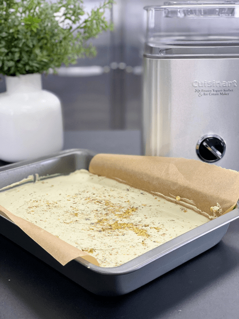
-
Make sure the surface is flat and even.
-
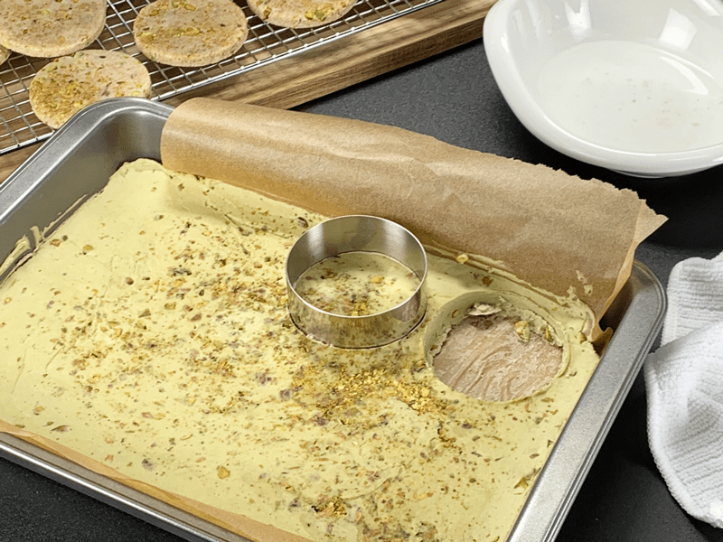
-
Dip your cookie cutter in water between each cut.
-
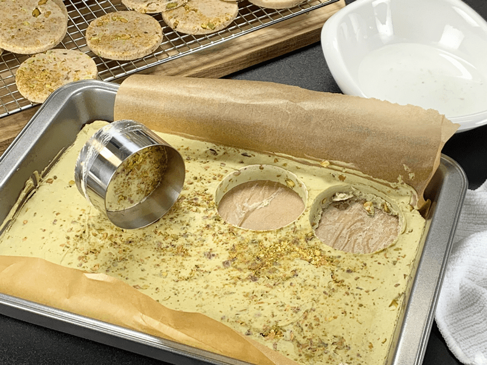
-
I was able to make nine ice cream centers. Enjoy the scraps as a reward!